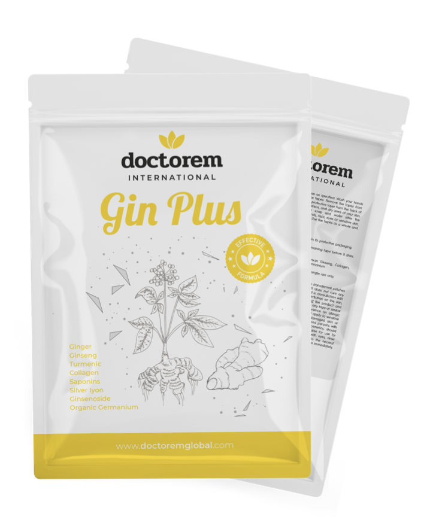

Enerji, bağışıklık ve zihinsel berraklık için doğadan gelen güçlü destek: Gin Plus ile hayatın ritmini yakala!
Mide problemleri, sindirim bozuklukları ve bulantıyı giderici özellikleri ile bilinir. Anti-inflamatuar özelliklere sahip olup bağışıklık sistemini güçlendirir ve ağrıyı hafifletir.
Antioksidan ve anti-inflamatuar özellikleri ile öne çıkar. Vücutta iltihaplanmayı azaltabilir, eklem sağlığını iyileştirebilir ve sindirimi destekleyebilir. Ayrıca cilt sağlığına da fayda sağlar.
Cilt bakımında sıkça kullanılan bir bitkidir. Cildi nemlendirir, iyileştirir ve sakinleştirir. Aynı zamanda sindirim sistemi üzerinde de rahatlatıcı etkisi vardır ve vücudu detoksifiye eder.
Cilt, eklem, kas ve kemik sağlığını destekleyen bir proteindir. Yaşlandıkça kolajen üretimi azalır, bu da ciltte kırışıklıklar ve eklem ağrılarına yol açabilir. Kolajen takviyeleri bu kaybı telafi etmeye yardımcı olur.
Doğal bir antibakteriyel ajandır. Bakteri ve virüslerle savaşarak vücudun enfeksiyonlara karşı savunmasını güçlendirir. Ayrıca yara iyileşmesini hızlandırabilir.
Eklem sağlığını destekleyen ve kıkırdakların onarımını teşvik eden doğal bir bileşiktir. Eklem ağrılarını azaltabilir ve iltihaplanmayı engelleyebilir.
İltihaplanmayı azaltan, ağrı kesici ve eklem sağlığını iyileştiren bir bileşiktir. Cilt, saç ve tırnak sağlığını da destekler, ayrıca kas ve eklem ağrılarını hafifletebilir.
Enerji seviyelerini artırarak yorgunluğu giderir. Ayrıca bağışıklık sistemini güçlendirir, stresle mücadele eder ve zihinsel uyanıklığı destekler.
Rahatlatıcı ve antiseptik özellikleri ile bilinir. Bağışıklık sistemini güçlendirebilir, vücuda enerji verebilir ve kas ağrılarını azaltabilir. Ayrıca solunum yollarını açmaya yardımcı olabilir.
Eklem sağlığını destekleyen bir bileşiktir. Eklem kıkırdağını korur, ağrıyı azaltır ve eklem hareketliliğini artırabilir. Genellikle osteoartrit tedavisinde kullanılır.